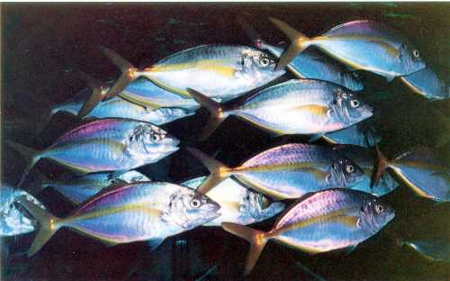

| ニューカイサールシリーズは養殖網、定置網に貝、海藻類又はその他海中生物の付着防止に優れた効果を持つ画期的で安全な漁網防汚剤です。 |

| 特徴 | ●優れた防汚効果 | 優れた防汚効果により、長期間防汚効果を発揮します。 |
| ●作業性が良好 | べたつきが少なく、乾燥性が良好です。又、網は強張りません。 | |
| ●高い安全性 | 有機錫化合物を含んでいませんので、環境汚染の心配がありません。 | |
| ●優れた経済性 | 網への付着量が低減され、また、長期間の防汚効果により経済的です。 |
| 使用方法 | |
| ☆ | 防汚剤は原液のまま御使用下さい。又、使用前に十分に攪拌して下さい。 |
| ☆ | 他の防汚剤や薬品等との混合使用は避けて下さい。 |
| ☆ | 処理する網は付着生物等の汚れを取り除き、十分乾燥して染め漏れのないように浸漬槽にどぶ漬けして下さい。 |
| ☆ | ジョロなどの散布はなるべくやらないで下さい。網染め処理剤の網は液を切った後、網を広げてできるだけ日陰干しにし完全に乾燥してから御使用下さい。網染め後の乾燥が不十分ですと油が浮きでる事があります。 |
| ☆ | 残液はもとの容器に戻し、密封しておけば再使用が可能です。 |
| ☆ | 本防汚剤は、定置網及び養殖網用の防汚剤です。モジャコ等の稚魚用の網、真珠貝やホタテ貝、ワカメ等の養殖資材には使用しないで下さい。 |
| ☆ | 本防汚剤は、定置網及びハマチ、タイ、アジ、シマアジ、カンパチ等の養殖網用です。他魚の養殖や畜養魚等の網に使用のときは、確認の上使用して下さい。 |
| ☆ | 残液は、海、河川、下水道、池等の地中に捨てないで下さい。 |
| ☆ | 使用済みの容器は、他に流用又は転用しないで下さい。 |
| ☆ | 空容器は放置せず、水洗後産業廃棄物として処理して下さい。 |